k-Day 149｜獨庫公路（四）跟著路書走
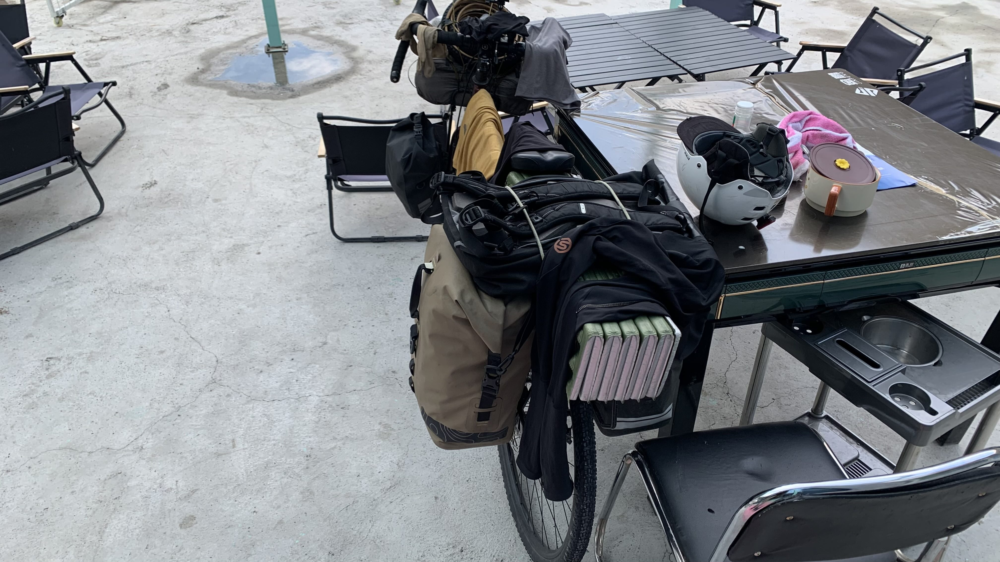
昨晚洗的衣服還是濕的，出發前將衣褲塞在前後貨架的束帶下，風吹一吹就乾了吧。
其他也是昨晚入住的自行車騎士也都起來整裝，雖然也想和他們打招呼，但是每個人身上都是專業的公路車裝備，還是自己出發吧。
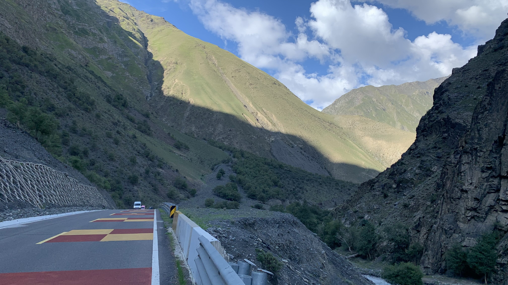
天氣很好，山坡上出現綠色，不冷不熱的溫度，心情不錯。
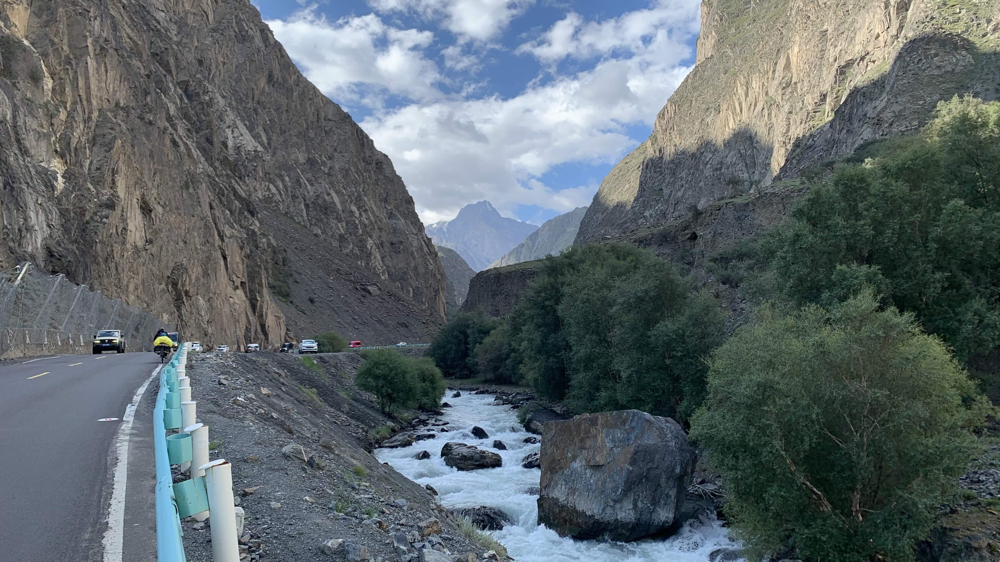
路上的車還是一樣多，前方發現熟悉的車尾包。是前幾天一起在烏蘇驛等待的白帳篷騎士。拿出手機幫他錄了一段影片，騎旁邊問他需不需要。果然也和我一樣，一路上都沒有拍到自己的身影。兩人加了微信，按照自己的爬坡步調緩慢推進，沒多久就又錯開了。
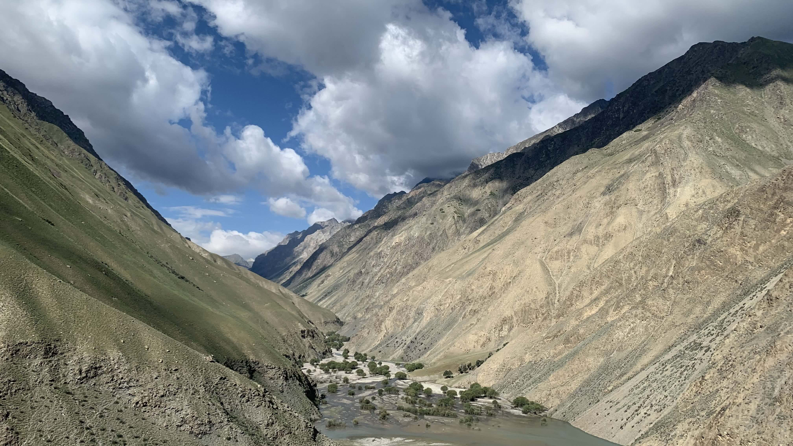
同樣是河谷，卻沒有在蒙古的那種恐懼感，或許是因為視野較為狹窄，也可能是周遭的車流、單車騎士、人造痕跡使我沒有孤身一人面對整個自然的感覺。
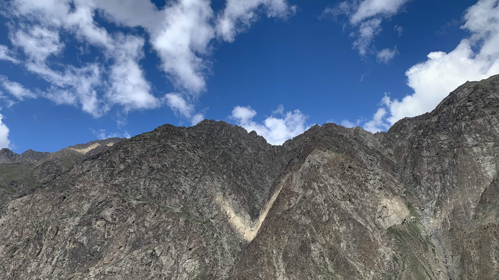
太陽穿過兩片雲，在山壁上照出V形光芒。
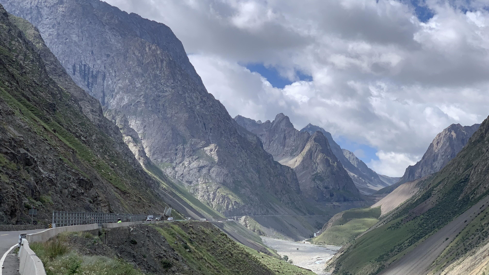
道路延伸到河谷盡頭，距離山頂還差了一大截，這能爬到山頂嗎？
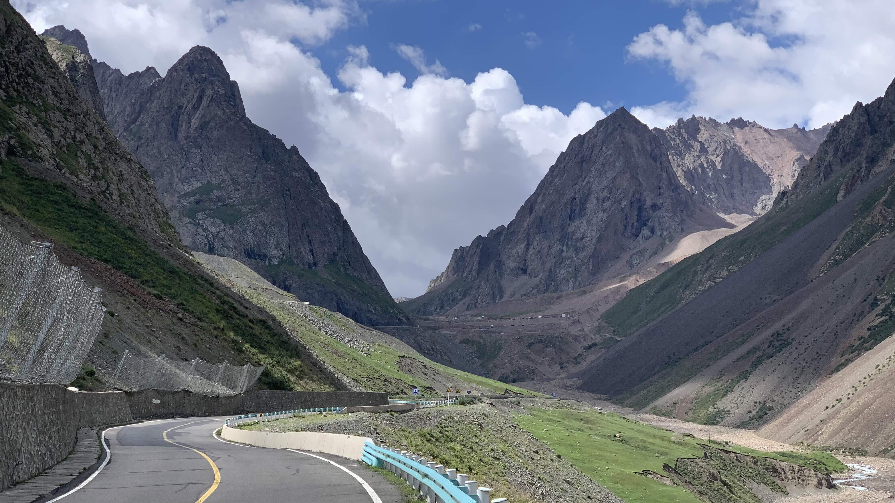
眼前的景象著實不妙，像毛毛蟲一樣一條一條往上蜿蜒的車流在陡坡上蠕動。
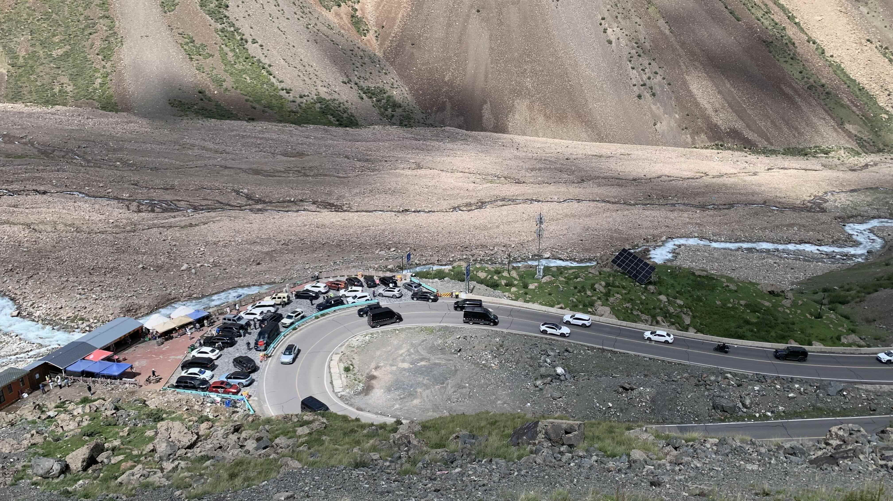
山上的小賣部已經不支援支付寶了，沒有微信錢包的我只好爬到上方休息拍照，照片裡有不少單車騎士，都是一路上你超過我我又超過你，一起來到此地。
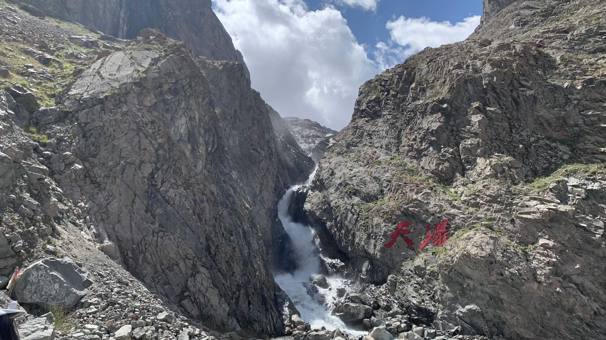
遠遠看到這兩個紅字就不太愉悅了，是誰的主意在瀑布旁邊貼兩個跟瀑布本人同寬的紅色斗大字體？沒有這兩個字我就認不出這是瀑布嗎？還是有什麼樣的文化根基，使得我們必須為世間存在的一切命名才能安心呢？
沒時間多想，剛拍完照管制交通的警察就跑過來叫我趕緊離開。回頭一看已經有三輛車跟著我一起停在路上拍瀑布，前後車流都卡在天瀑下。
雖然我明明是站在路邊拍的照，但後面的車子可不在乎。「既然有個人停下來拍了，那我也得停下來！」在中國待久了，這樣的心態也是可以理解。為了不打擾交警維持秩序，趕緊踩著二十三號逃離車陣。
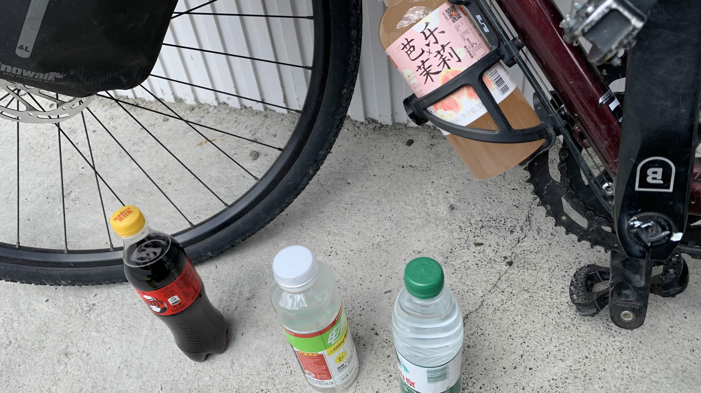
路過較大型，有支付寶功能的休息站，趕緊買了四瓶飲料。芭樂茉莉是第一次看到的，等爬到山頂可以打開來嘗鮮。
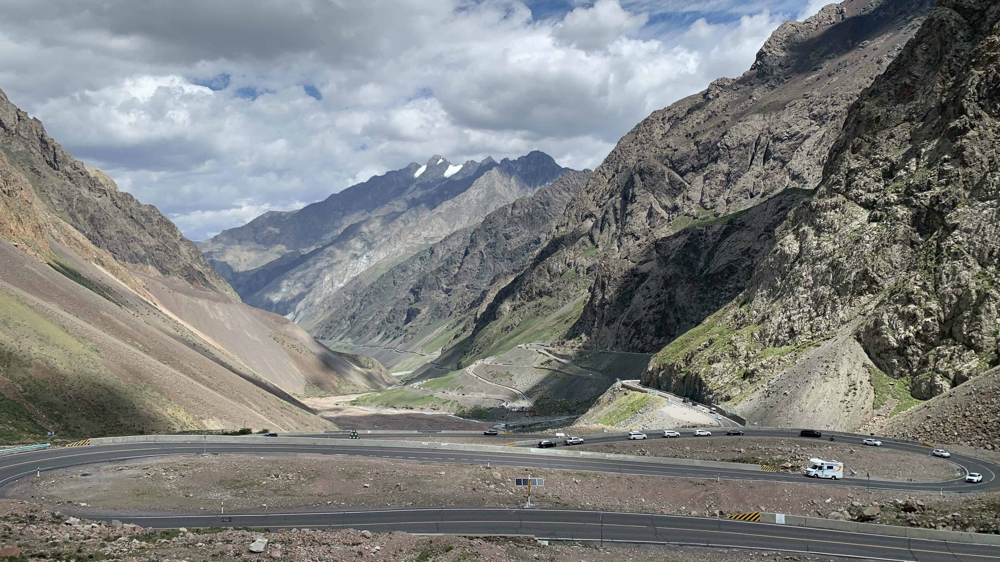
走到護欄邊，欣賞今天的來時路。我好像很喜歡爬這種緩坡，雖然喘著氣，又不至於踩不上去。過程中能夠將意識集中在身體，逐漸調整力量傳導的方式。獨庫公路算是基礎設施不錯，但人流過多管治失當的健身房吧。
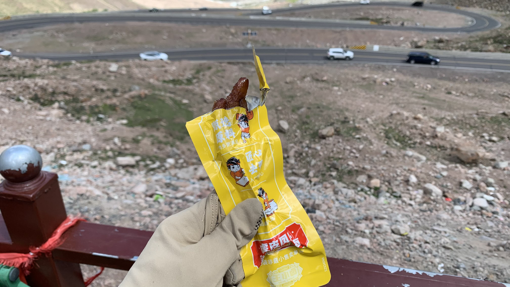
正在感嘆時，一名操著北京口音的男性遞給我一支鹵雞爪。從來沒買過這類小零食，竟然意外好吃。
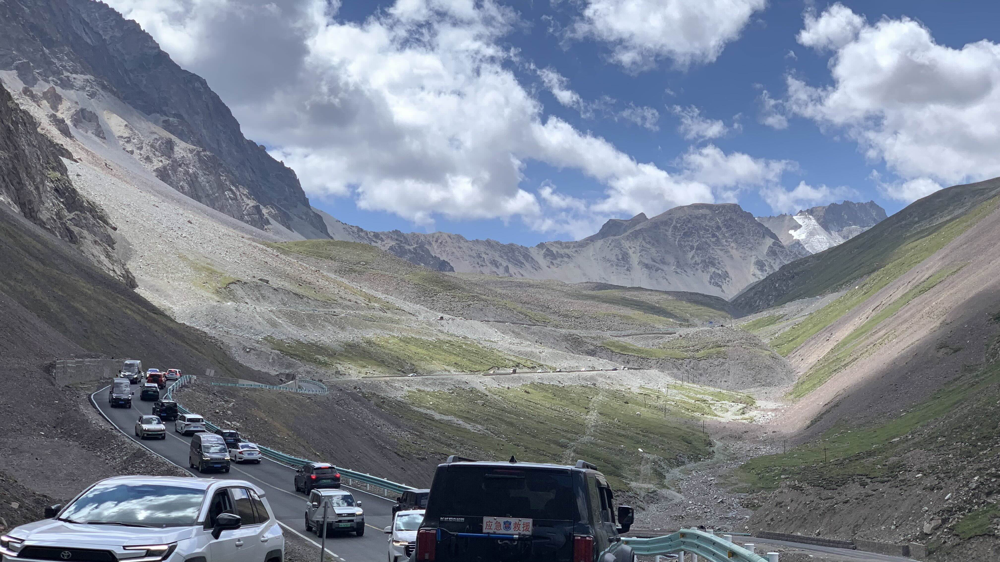
出發後車流依然驚人，這些開車的人必須待在鐵盒子裡，從獨山子一路塞到庫車，這種旅行方式好像太辛苦了一些。
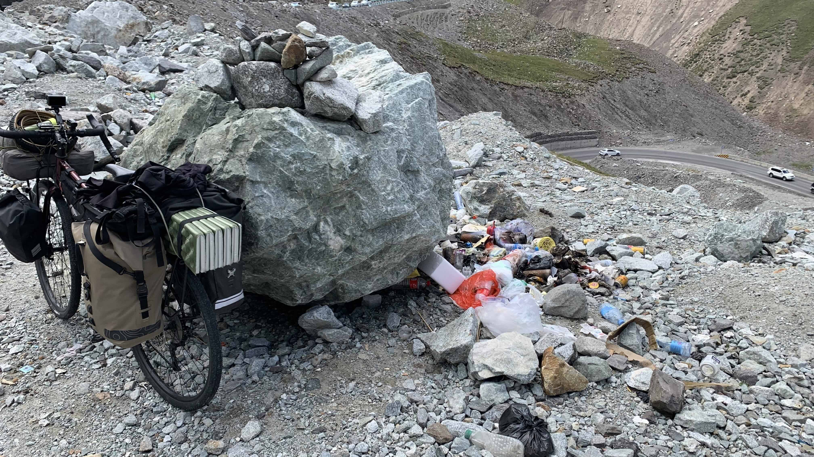
大石頭後面被丟棄了許多垃圾，心態大概是這樣的：「我想亂丟垃圾，但我有素質，誒！這裡有顆大石頭，我就丟在他後面，路過的人就看不到了。既不破壞自然景觀，也不影響其他遊客，我的心裡車裡也清爽了。丟個垃圾可以創造三贏局面，我真牛逼！」
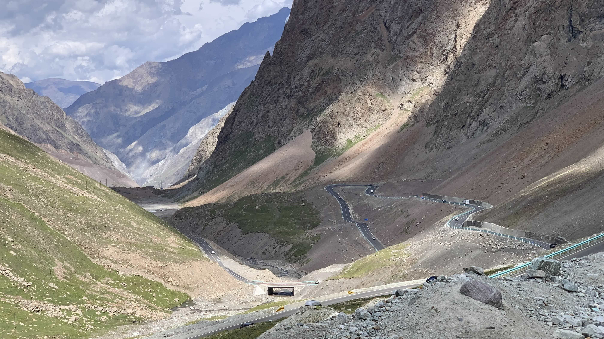
好喘啊，已經是爬五公里就必須休息一次的節奏。
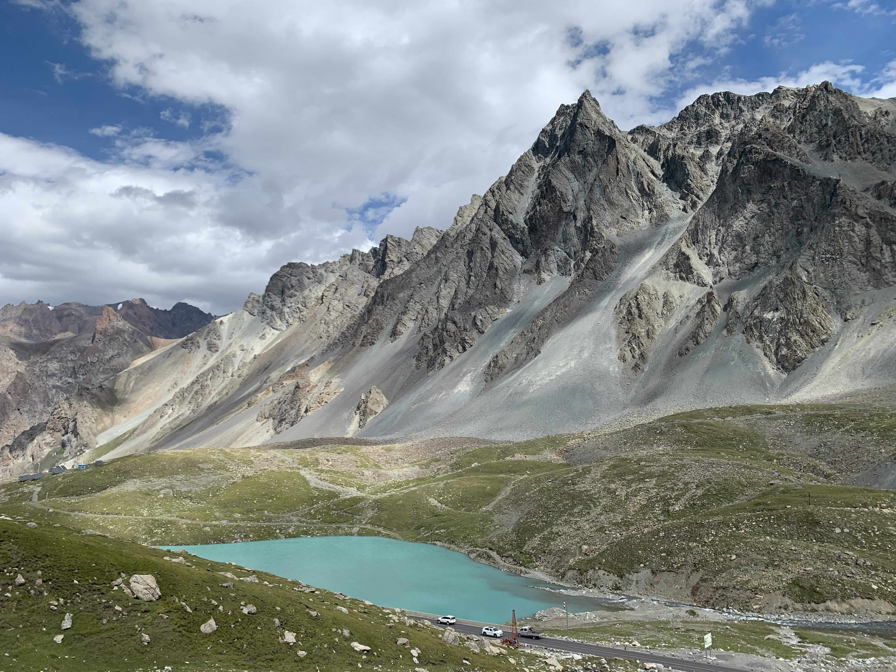
休息時發現有個綠色湖泊，湖邊同樣設立小賣部，還有個高台插上「G217 此生必駕」的獨庫公路標誌讓遊客排隊上樓梯打卡。湖邊風景不太乾淨，爬到高一點的斜坡往下俯瞰，還是挺漂亮的。
說漂亮有點違心，在現場其實蠻不舒服，每個小賣部都有擴音設備不斷叫賣，電音舞曲和嘶吼的抒情歌偶而也會讓我想插爆耳膜。既不喜歡「此生必駕」這類標語，更討厭湖邊用廉價油漆漆上橘黃色的輪胎就這樣圍著湖泊。但是我想照片應該會漂亮的吧，就還是拍了照。
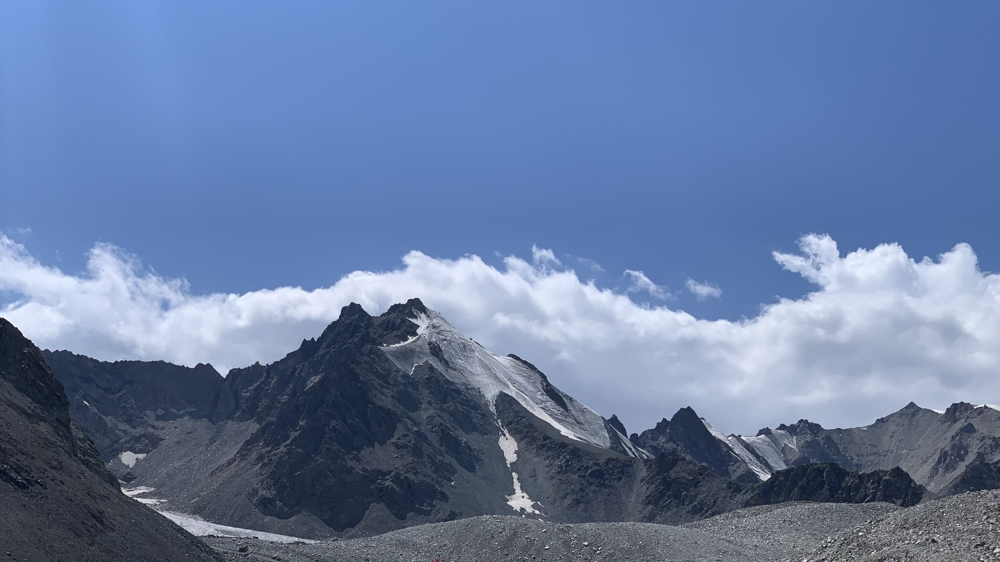
休息後往上爬，山頂只剩下灰色砂石，上方積雪沒有融化。
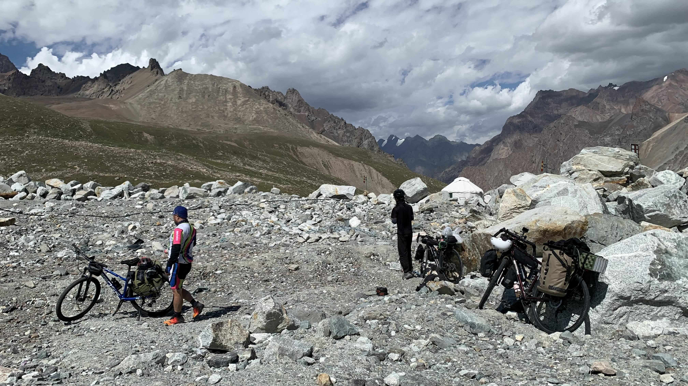
遇到兩個同樣騎自行車的新朋友，左邊的大哥是自己開公司的老闆，右邊是讀教育系的大學生，大哥稱他小蔣。聽說他倆都來自廣西，昨天在大雨中相遇，大哥跟小蔣說：「如果你跟著我騎，一路上吃得住的是不用擔心的。」大哥邀請我跟他們一起煮咖啡和泡麵，吃完了再過隧道下山。
「時間上來得及嗎？」我有點擔心
「你沒有看路書嗎？再上去五公里，就是那個隧道，你看到沒有？過了隧道連續二十多公里下坡，就到喬爾馬啦！」大哥說。
「喬爾馬是啥？」我可不確定是不是要住在那裡啊。
「你出發前不看攻略嗎？」小蔣問。
「抖音上和小紅書有好多人分享，這都是經過無數人的測試，每天要騎到哪裡，每一段的路況，哪裡可以休息，晚上要住哪裡，都是規劃好的。獨庫公路已經開發得很成熟了，你跟著路書走就沒錯。」大哥拿出手機給我看裡面的遊記，果然連出發後每一段路的坡度都寫得十分詳盡。
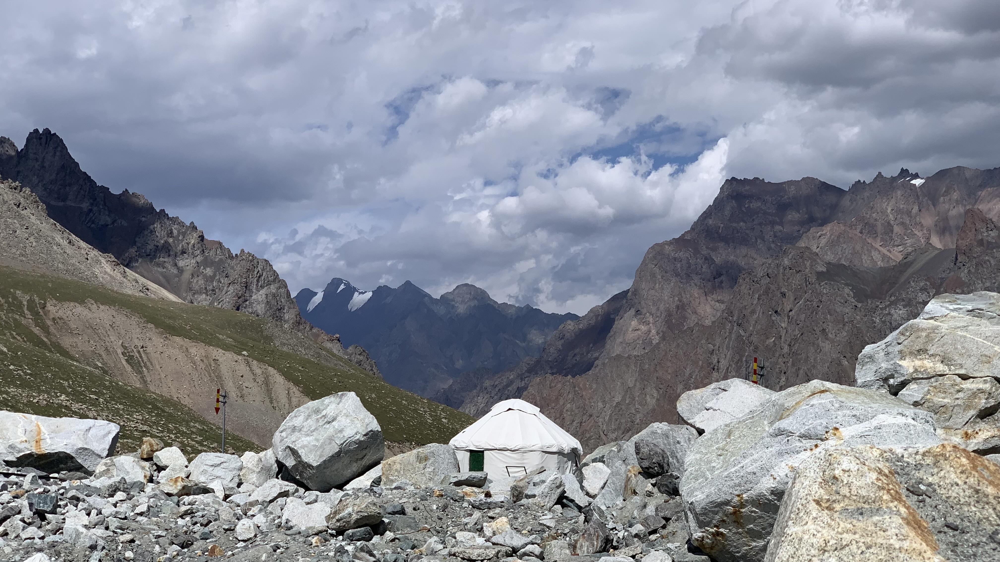
既然這樣，就留下來一起吃泡麵吧。這裡的毛氈房跟蒙古包長得不一樣，這造型不扛風啊。
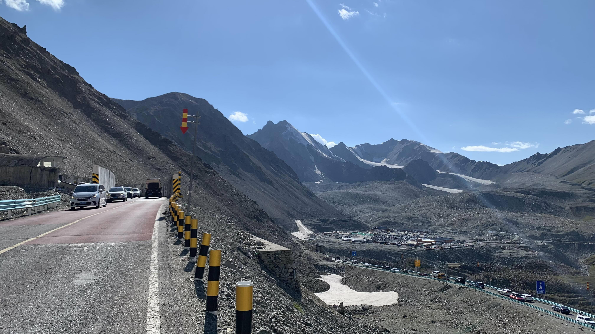
過隧道前，說好了三個人一起通過，因為小蔣的車沒有前後燈，於是組成一個我在前面照路，大哥殿後的隊形。
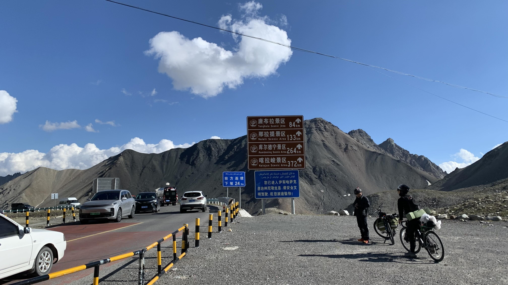
順利過了隧道，準備穿上防風外套時，發現手錶在吃泡麵時按了暫停，翻過最高點的五公里完全沒有記錄到軌跡。
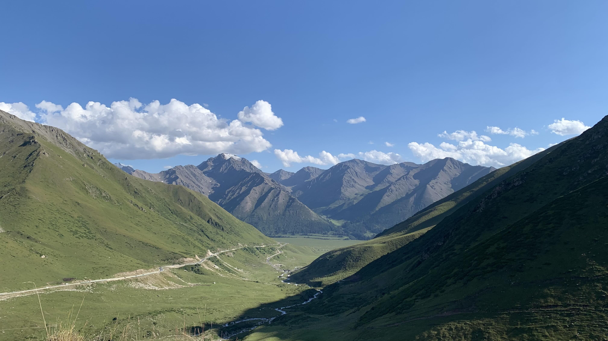
過了山口綠意盎然，一路俯衝沒有時間拍照。
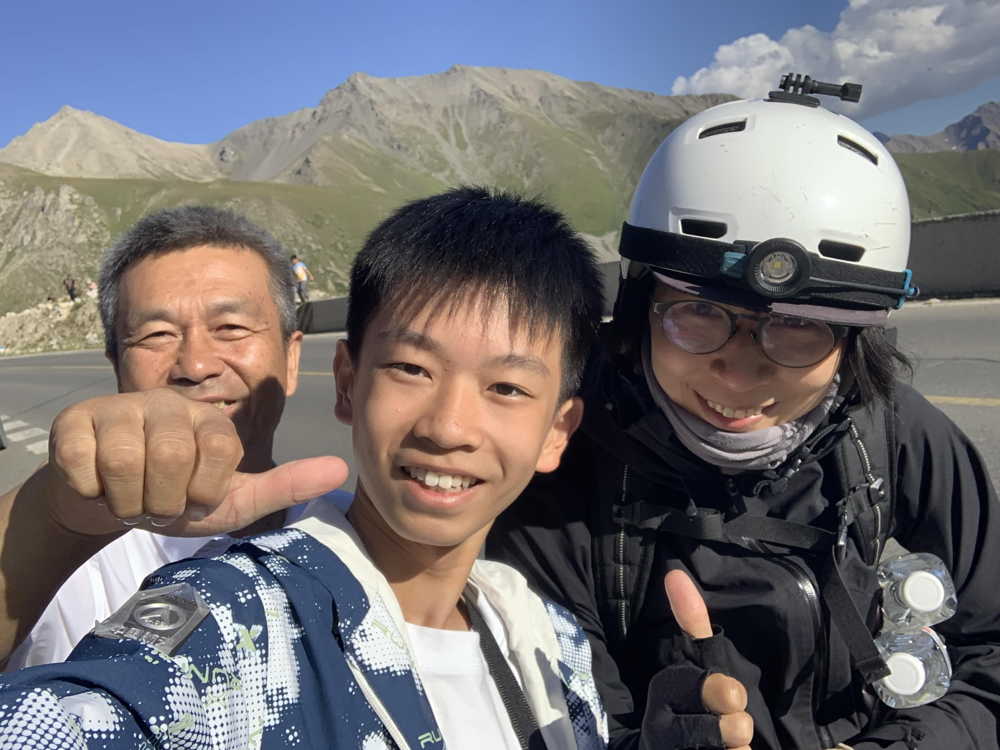
經過較寬的路，將二十三號停在路肩拍照。走來一對爺孫，是河北口音，兩人拿了兩瓶礦泉水給我，和我說加油。
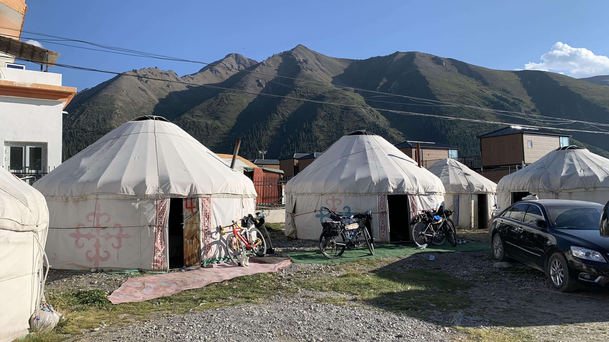
抵達山谷後找到大哥，他說今天可以和他們睡一個蒙古包。跟著他們走到營地，竟然已經停了好幾輛自行車。難道真如他們說的，每個人都是看了路書才上山的嗎？
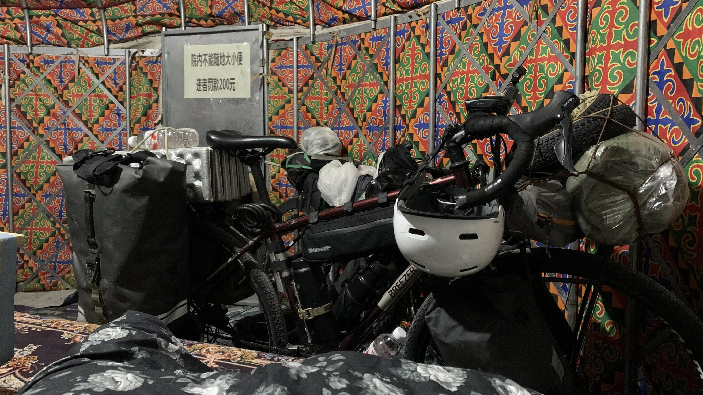
直到天黑小蔣才下山，詢問原因，竟然是因為煞車來令片早在幾天前已磨光，他就一路用腳煞車滑下山。拿出自己車包裡的備用來令片給他，沒想到待了三副還是有派上用場的時候。
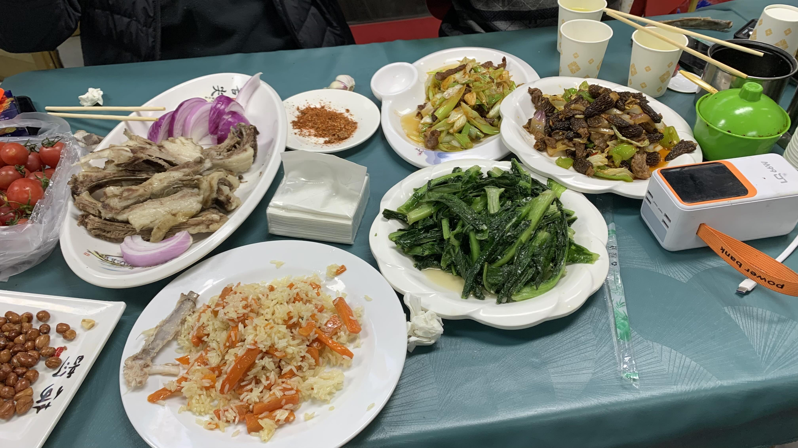
晚上大哥說要請我們吃飯。一行三人穿上拖鞋走到隔壁蒙古包，問了之後主人表示可以幫我們做飯。
大哥接著問：「有沒有羊肉？」老闆立刻說有，並從房內拿出一隻剛宰的羊。
大哥又問：「你們都有什麼菜？你都沒有菜單，我怎麼知道要不要吃？」老闆於是拿出手機上的菜單。
「就這麼一點東西？我們去前面餐廳吃！」大哥說完就往餐廳的方向走。
我的心裡有點不是滋味。當然知道這裡不是蒙古，也許中國境內有自己的主客交易方式，可是我看到那隻剛宰的羊和菜譜被嫌棄的時候，我感覺自己認同的某種生活和背後的精神被糟踏了。
到了餐廳後，大哥點了一桌菜。服務員送上一盤大哥要求的地方特色下酒菜生洋蔥拌紅蕃茄冷盤，沒想到大哥突然拍桌大吼：「這東西都是生的能吃嗎？我問你這菜能不能下酒，你剛剛還騙我說能？給我端走換盤新的！」
「這不能吃，沒人吃生洋蔥。」小蔣一邊附和著一邊拆下筷子套，趕在服務生收盤前從盤子裡夾了幾條洋蔥和番茄吃。
長見識了。這我可沒辦法。
回到蒙古包，三人有一搭沒一搭聊天。
小蔣是大學生，為了這次騎行打了兩個月的工，一個月休兩天，每天工作十小時，兩個月的薪水是六千元人民幣。
老闆的公司有三十多位員工，他說他的公司今年一次招了10個實習生，一天也是工作十到十二小時，一個月給他們四千五。沒有報中國的勞健保，但是給他們加班費，因為加班費以四千五的薪資除下來，每小時只要給他們15元。
在我聽來當然覺得誇張，但小蔣說以他的立場，也是因為有這種工作，他才能存到錢出來騎車。
也許是因為申訴的管道不足以使人信任，聽說很少有員工會去勞工局檢舉。老闆也說該怎麼鑽這些，他們當老闆的早就研究透徹了，申訴也沒用。
一個個體要信任體制或者社會、群體，原來是需要經過一段時間，很多人的改革，大多數的人也都遵守著某些規範，才能擁有貌似基本的人的尊嚴。
今日花費：水 5、飲料 26元